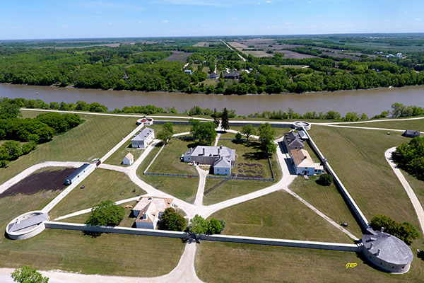

Bienvenue sur mon site web, découvrons le traité 1.
0
1. Did you know that Treaty 1 was negotiated at lower fort garry
this is a photo

Treaty 1 negotiated in Winnipeg
2. Also this a map of the treaty 1 area displayed
Treaty 1 map in canada
3. See the Treaty 1 map in context, meaning, a bigger map with a
coloured chunk.
Treaty 1 map in Manitoba
What communities are involved and what is their ethnic affiliation is
or what Nation they are from?
Treaty 1 signed in 1871 involved Indigenous Nations such as the
Ojibwe, Anishinaabe, Cree, and Saulteaux, mostly from southern
Manitoba, who were represented by bands like the Peguis, Norway House
Cree, and Sioux Valley Dakota, and others.
5. What are the historic terms of the Treaty, meaning what was
included in the Treaty (ex. the outside promises, how much land each
family of five were to receive, etc.).
The historic terms of treaties usually included giving up land,
receiving yearly payments or goods, land for families to live on,
promises of peace and protection, rights to hunt and fish, and help
with education and healthcare, Evan though they never actually did
what the promised.
6. What makes this Treaty different from other Treaties in Canada?
Treaty 1 is unique because it was the first of the numbered treaties,
signed on August 3, 1871, between the Crown and the Saulteaux and Cree
peoples in Southern Manitoba specifically near Fort Garry (modern-day
Winnipeg), distinguishing it by its date, people who signed it, and
location.
7. How is the Treaty being implemented today. For example, information
about urban reserves (ex. Kapyong Urban Reserve, Long Plain First
Nations Gas Station, etc.) or economic development in Treaty
communities?
Today, Treaty 1 is being put into action through projects like e.g.,
Kapyong Urban reserves and businesses like gas stations helping First
Nations communities create jobs, manage resources, and make their own
decisions also the.